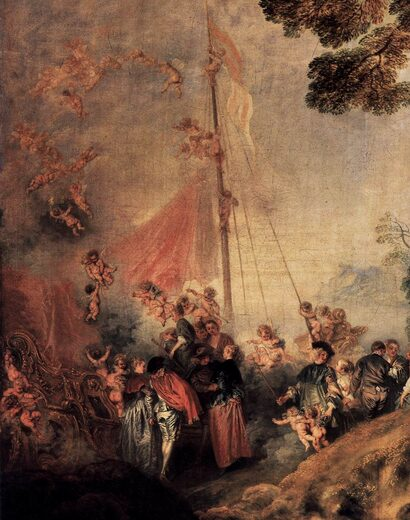
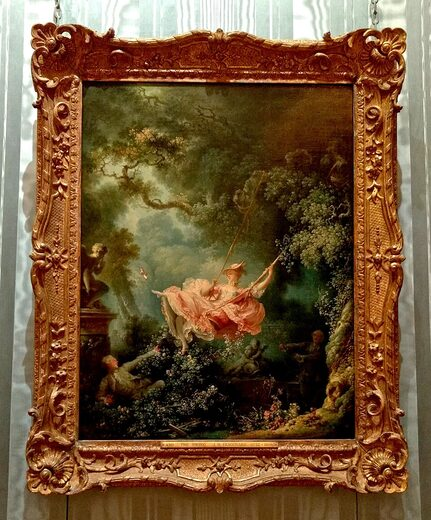
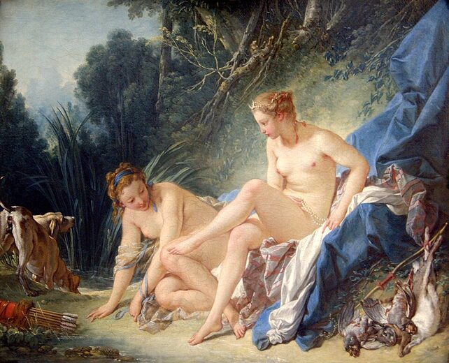

Peregrinação à Ilha de Citera
Watteau inventa a fête galante: amor, viagem e melancolia em paisagem idílica.
Sala V
O Mundo Rococó
Fête galante, sedução e o refinamento do gosto cortesão.

Watteau inventa a fête galante: amor, viagem e melancolia em paisagem idílica.

Fragonard condensa erotismo, jogo e ornamento em cena de jardim privado.

Boucher encerra a exposição: do ícone sagrado ao espelho do prazer estético no século XVIII.
Encerramento da exposição